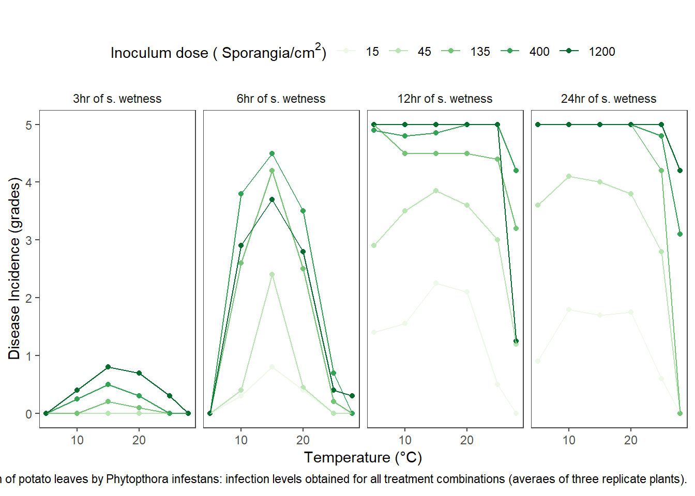
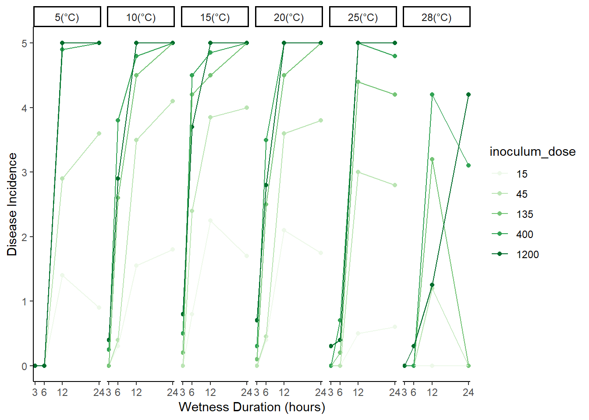
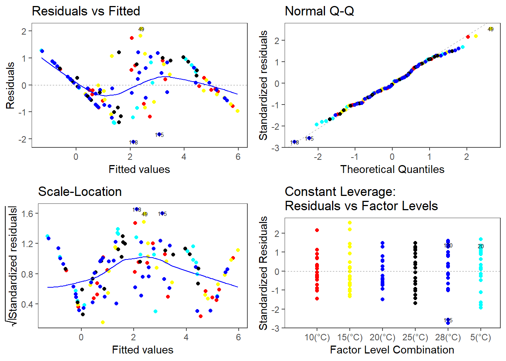
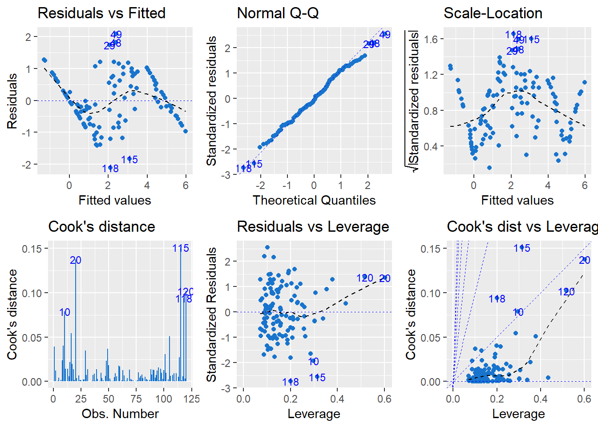

Text(Rotem 1971).
list.of.packages <-
c(
"readxl",
"here", #package that helps paths in different platforms
"stringr", #string manipulations
"reshape2", #Reshaping the data to long format, needed for plotting and model fitting
"egg", #Plotting aids: interesting themes and putting together a number of plots
"RColorBrewer", #Color palette
"mgsub"
)
new.packages <-
list.of.packages[!(list.of.packages %in% installed.packages()[, "Package"])]
#Download packages that are not already present in the library
if (length(new.packages))
install.packages(new.packages)
packages_load <-
lapply(list.of.packages, require, character.only = TRUE)
#Print warning if there is a problem with installing/loading some of packages
if (any(as.numeric(packages_load) == 0)) {
warning(paste("Package/s", paste(list.of.packages[packages_load != TRUE]), "not loaded!"))
} else {
print("All packages were successfully loaded.")
}## [1] "All packages were successfully loaded."!!!!Check stadnard errors for various infection levels
dis_df <- read_excel(here::here("cucak", "1", "dat", "P_inf_infection_Rotem.xlsx"))
dis_df <-
reshape2::melt(dis_df, id.var = 1:2, variable.name = "temp", value.name = "dis_inc",factorsAsStrings = F)
dis_df$temp <- as.numeric(as.character.factor(dis_df$temp))
dis_df$wet_dur_lab <- factor(dis_df$wet_dur)
levels(dis_df$wet_dur_lab) <- paste0(levels(dis_df$wet_dur_lab), "h of s. wetness")
dis_df$inoculum_dose <- factor(dis_df$inoculum_dose, ordered = T)
head(dis_df)ggplot(dis_df,aes(x= temp, y = dis_inc, group = inoculum_dose, colour = inoculum_dose))+
geom_point()+
geom_line()+
facet_wrap(wet_dur_lab~., ncol = 4)+
scale_color_brewer(palette="GrandBudapest")+
labs(
title = "",
x = "Temperature (°C)",
y = "Disease Incidence (grades)",
color = expression(paste("Inoculum dose ( Sporangia", "/",cm^2,")", sep="")),
caption = expression(paste(
"\nFigure 1. The effect of temperature (T, in °C), inoculum dose (Sporangia, in cm) and duration of wet period (W, in hr) on infection of potato leaves by ", "Phytopthora infestans: infection levels obtained for all treatment combinations (averaes of three replicate plants)."
)))+
theme_article()+
theme(legend.position = "top")## Warning in pal_name(palette, type): Unknown palette GrandBudapest
dis_df$wet_dur_lab <- NULL dis_df$temp_lab <- factor(dis_df$temp)
levels(dis_df$temp_lab) <- paste0(levels(dis_df$temp_lab), "(°C)")
ggplot(dis_df,aes(x= wet_dur, y = dis_inc, group = inoculum_dose, colour = inoculum_dose))+
geom_point()+
geom_line()+
facet_wrap(temp_lab~., ncol = 6)+
scale_color_brewer(palette="GrandBudapest")+
scale_x_discrete(limits= unique(dis_df$wet_dur), labels = as.character(unique(dis_df$wet_dur)))+
xlab("Wetness Duration (hours)")+
ylab("Disease Incidence")+
theme_classic()## Warning in pal_name(palette, type): Unknown palette GrandBudapest
We are trying to model a complex response to 3 interacting explanatory variables. The Weibull function might be an appropriate model for the response to leaf wetness duration for two reasons. First, it has a suitable sigmoid cumulative distribution and second it has a location (or shift) parameter that can be interpreted in biological terms as a minimum requirement for suitable conditions before a process will occur. The Weibull function has many different parameterizations but one that is relevant for this problem is:\[ f(d) =\frac{\beta}{\eta} \left(\frac{t-\gamma}{\eta}\right)^{\beta-1} e^{\left(\frac{t-\gamma}{\eta}\right)^{\beta}} \]
Where \(f(d)\) is the wetness-duration-dependent infection function, \(\beta\) is the Weibull rate parameter, \(\eta\) is the scale parameter (setting the characteristic duration over which events are completed), and \(\gamma\) is the location parameter.
We choose a value (for function) for \(\gamma\) that replicates what is know about the biology of the process. This leaves the issue of the remaining parameters \(\beta\) and \(\eta\). In essence, we construct functions for the response of these parameters to temperature and inoculum density, either from first principles, from data fitting, or a hybrid process. Then we plug the derived functions into the formula for the Weibull function, which becomes a translation device for turning input data for temperature, inoculum level and wetness duration into values for infection intensity.
Writing generic functional forms for the functions for \(\beta\) and \(\eta\) as \(\beta\equiv h(T,I)\) and \(\eta\equiv l(T,I)\), where \(T\) and \(I\) are temperature and inoculum level, respectively, we obtain:\[ f(d) =\frac{h(T,I)}{l(T,I)} \left(\frac{t-\gamma}{l(T,I)}\right)^{h(T,I)-1} e^{\left(\frac{t-\gamma}{l(T,I)}\right)^{h(T,I)}} \]
dis_df$inoculum_dose <- as.numeric(as.character(dis_df$inoculum_dose))
poly.fit <- lm(dis_inc ~ poly(temp,
wet_dur,
inoculum_dose,
degree = 3),
data = dis_df )
summary(poly.fit)##
## Call:
## lm(formula = dis_inc ~ poly(temp, wet_dur, inoculum_dose, degree = 3),
## data = dis_df)
##
## Residuals:
## Min 1Q Median 3Q Max
## -2.11611 -0.55673 -0.05045 0.62103 2.08640
##
## Coefficients:
## Estimate Std. Error
## (Intercept) 2.11417 0.07877
## poly(temp, wet_dur, inoculum_dose, degree = 3)1.0.0 -3.82113 0.86287
## poly(temp, wet_dur, inoculum_dose, degree = 3)2.0.0 -6.18862 0.86287
## poly(temp, wet_dur, inoculum_dose, degree = 3)3.0.0 -0.69107 0.86287
## poly(temp, wet_dur, inoculum_dose, degree = 3)0.1.0 13.77248 0.86287
## poly(temp, wet_dur, inoculum_dose, degree = 3)1.1.0 -26.84447 9.45231
## poly(temp, wet_dur, inoculum_dose, degree = 3)2.1.0 -5.63939 9.45231
## poly(temp, wet_dur, inoculum_dose, degree = 3)0.2.0 -8.68042 0.86287
## poly(temp, wet_dur, inoculum_dose, degree = 3)1.2.0 9.27032 9.45231
## poly(temp, wet_dur, inoculum_dose, degree = 3)0.3.0 -1.60520 0.86287
## poly(temp, wet_dur, inoculum_dose, degree = 3)0.0.1 5.87560 0.86287
## poly(temp, wet_dur, inoculum_dose, degree = 3)1.0.1 1.71190 9.45231
## poly(temp, wet_dur, inoculum_dose, degree = 3)2.0.1 -6.90072 9.45231
## poly(temp, wet_dur, inoculum_dose, degree = 3)0.1.1 33.59619 9.45231
## poly(temp, wet_dur, inoculum_dose, degree = 3)1.1.1 139.17543 103.54492
## poly(temp, wet_dur, inoculum_dose, degree = 3)0.2.1 -10.64017 9.45231
## poly(temp, wet_dur, inoculum_dose, degree = 3)0.0.2 -5.96567 0.86287
## poly(temp, wet_dur, inoculum_dose, degree = 3)1.0.2 -0.58534 9.45231
## poly(temp, wet_dur, inoculum_dose, degree = 3)0.1.2 -27.46679 9.45231
## poly(temp, wet_dur, inoculum_dose, degree = 3)0.0.3 3.77911 0.86287
## t value Pr(>|t|)
## (Intercept) 26.840 < 2e-16 ***
## poly(temp, wet_dur, inoculum_dose, degree = 3)1.0.0 -4.428 2.43e-05 ***
## poly(temp, wet_dur, inoculum_dose, degree = 3)2.0.0 -7.172 1.30e-10 ***
## poly(temp, wet_dur, inoculum_dose, degree = 3)3.0.0 -0.801 0.42509
## poly(temp, wet_dur, inoculum_dose, degree = 3)0.1.0 15.961 < 2e-16 ***
## poly(temp, wet_dur, inoculum_dose, degree = 3)1.1.0 -2.840 0.00547 **
## poly(temp, wet_dur, inoculum_dose, degree = 3)2.1.0 -0.597 0.55211
## poly(temp, wet_dur, inoculum_dose, degree = 3)0.2.0 -10.060 < 2e-16 ***
## poly(temp, wet_dur, inoculum_dose, degree = 3)1.2.0 0.981 0.32908
## poly(temp, wet_dur, inoculum_dose, degree = 3)0.3.0 -1.860 0.06578 .
## poly(temp, wet_dur, inoculum_dose, degree = 3)0.0.1 6.809 7.41e-10 ***
## poly(temp, wet_dur, inoculum_dose, degree = 3)1.0.1 0.181 0.85665
## poly(temp, wet_dur, inoculum_dose, degree = 3)2.0.1 -0.730 0.46706
## poly(temp, wet_dur, inoculum_dose, degree = 3)0.1.1 3.554 0.00058 ***
## poly(temp, wet_dur, inoculum_dose, degree = 3)1.1.1 1.344 0.18196
## poly(temp, wet_dur, inoculum_dose, degree = 3)0.2.1 -1.126 0.26300
## poly(temp, wet_dur, inoculum_dose, degree = 3)0.0.2 -6.914 4.51e-10 ***
## poly(temp, wet_dur, inoculum_dose, degree = 3)1.0.2 -0.062 0.95075
## poly(temp, wet_dur, inoculum_dose, degree = 3)0.1.2 -2.906 0.00451 **
## poly(temp, wet_dur, inoculum_dose, degree = 3)0.0.3 4.380 2.93e-05 ***
## ---
## Signif. codes: 0 '***' 0.001 '**' 0.01 '*' 0.05 '.' 0.1 ' ' 1
##
## Residual standard error: 0.8629 on 100 degrees of freedom
## Multiple R-squared: 0.8526, Adjusted R-squared: 0.8246
## F-statistic: 30.45 on 19 and 100 DF, p-value: < 2.2e-16anova(poly.fit)library(ggfortify)
autoplot(poly.fit, label.size = 2,
data = dis_df,
colour = factor(dis_df$temp, ordered = T))+
theme_article()## Warning in if (value %in% columns) {: the condition has length > 1 and only
## the first element will be used
## Warning in if (value %in% columns) {: the condition has length > 1 and only
## the first element will be used
## Warning in if (value %in% columns) {: the condition has length > 1 and only
## the first element will be used
## Warning in if (value %in% columns) {: the condition has length > 1 and only
## the first element will be used
autoplot(poly.fit, which = 1:6, colour = 'dodgerblue3',
smooth.colour = 'black', smooth.linetype = 'dashed',
ad.colour = 'blue',
label.size = 3, label.n = 5, label.colour = 'blue',
ncol = 3)
#Problem scale location## - Session info ----------------------------------------------------------
## setting value
## version R version 3.6.0 (2019-04-26)
## os Windows 10 x64
## system x86_64, mingw32
## ui RTerm
## language (EN)
## collate English_United States.1252
## ctype English_United States.1252
## tz America/Los_Angeles
## date 2019-05-28
##
## - Packages --------------------------------------------------------------
## package * version date lib
## assertthat 0.2.1 2019-03-21 [1]
## backports 1.1.4 2019-04-10 [1]
## blogdown 0.12 2019-05-01 [1]
## bookdown 0.9 2018-12-21 [1]
## callr 3.2.0 2019-03-15 [1]
## cli 1.1.0 2019-03-19 [1]
## codetools 0.2-15 2016-10-05 [1]
## crayon 1.3.4 2017-09-16 [1]
## desc 1.2.0 2018-05-01 [1]
## devtools 2.0.2 2019-04-08 [1]
## digest 0.6.19 2019-05-20 [1]
## evaluate 0.13 2019-02-12 [1]
## fs 1.3.0 2019-05-02 [1]
## glue 1.3.1 2019-03-12 [1]
## htmltools 0.3.6 2017-04-28 [1]
## klippy * 0.0.0.9500 2019-05-28 [1]
## knitr 1.22 2019-03-08 [1]
## magrittr 1.5 2014-11-22 [1]
## memoise 1.1.0 2017-04-21 [1]
## pkgbuild 1.0.3 2019-03-20 [1]
## pkgload 1.0.2 2018-10-29 [1]
## prettyunits 1.0.2 2015-07-13 [1]
## processx 3.3.0 2019-03-10 [1]
## ps 1.3.0 2018-12-21 [1]
## R6 2.4.0 2019-02-14 [1]
## Rcpp 1.0.1 2019-03-17 [1]
## remotes 2.0.4 2019-04-10 [1]
## rlang 0.3.4 2019-04-07 [1]
## rmarkdown 1.12.6 2019-04-20 [1]
## rprojroot 1.3-2 2018-01-03 [1]
## sessioninfo 1.1.1 2018-11-05 [1]
## stringi 1.4.3 2019-03-12 [1]
## stringr 1.4.0 2019-02-10 [1]
## testthat 2.1.1 2019-04-23 [1]
## usethis 1.5.0 2019-04-07 [1]
## withr 2.1.2 2018-03-15 [1]
## xfun 0.6 2019-04-02 [1]
## yaml 2.2.0 2018-07-25 [1]
## source
## CRAN (R 3.5.3)
## CRAN (R 3.5.3)
## CRAN (R 3.5.3)
## CRAN (R 3.5.2)
## CRAN (R 3.5.3)
## CRAN (R 3.5.3)
## CRAN (R 3.5.1)
## CRAN (R 3.5.1)
## CRAN (R 3.5.1)
## CRAN (R 3.6.0)
## CRAN (R 3.6.0)
## CRAN (R 3.5.3)
## CRAN (R 3.5.3)
## CRAN (R 3.5.3)
## CRAN (R 3.5.1)
## Github (RLesur/klippy@201d363)
## CRAN (R 3.5.3)
## CRAN (R 3.5.1)
## CRAN (R 3.5.1)
## CRAN (R 3.5.3)
## CRAN (R 3.5.2)
## CRAN (R 3.5.1)
## CRAN (R 3.5.3)
## CRAN (R 3.5.2)
## CRAN (R 3.5.3)
## CRAN (R 3.6.0)
## CRAN (R 3.5.3)
## CRAN (R 3.5.3)
## Github (rstudio/rmarkdown@9923811)
## CRAN (R 3.5.1)
## CRAN (R 3.5.2)
## CRAN (R 3.5.3)
## CRAN (R 3.5.3)
## CRAN (R 3.5.3)
## CRAN (R 3.5.3)
## CRAN (R 3.5.1)
## CRAN (R 3.5.3)
## CRAN (R 3.5.1)
##
## [1] C:/Users/mlade/Documents/R/library
## [2] C:/Program Files/R/R-3.6.0/libraryRotem, J. 1971. Relativity of Limiting and Optimum Inoculum Loads, Wetting Durations, and Temperatures for Infection by Phytophthora infestans. Phytopathology. 61:275 Available at: http://www.apsnet.org/publications/phytopathology/backissues/Documents/1971Abstracts/Phyto61_275.htm [Accessed March 23, 2018].